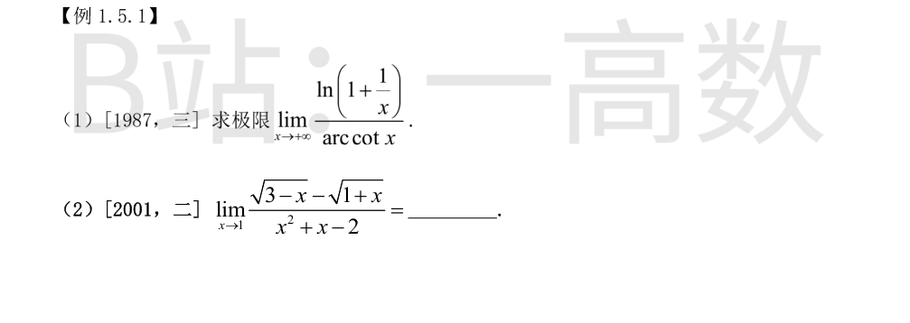
$0/0$ 型。当 $x\to+\infty$ 时
$$\ln\left(1+\frac1x\right)\sim\frac1x,\qquad \operatorname{arccot}x=\arctan\frac1x\sim\frac1x,$$
故
$$\lim_{x\to+\infty}\frac{\ln\left(1+\frac1x\right)}{\operatorname{arccot}x}
=\lim_{x\to+\infty}\frac{1/x}{1/x}=1.$$
分母因式分解：$x^2+x-2=(x-1)(x+2)$；分子有理化：
$$\sqrt{3-x}-\sqrt{1+x}=\frac{(3-x)-(1+x)}{\sqrt{3-x}+\sqrt{1+x}}=\frac{-2(x-1)}{\sqrt{3-x}+\sqrt{1+x}}.$$
于是
$$\text{原式}=\lim_{x\to1}\frac{-2}{\left(\sqrt{3-x}+\sqrt{1+x}\right)(x+2)}
=\frac{-2}{2\sqrt2\cdot3}=-\frac{1}{3\sqrt2}=-\frac{\sqrt2}{6}.$$
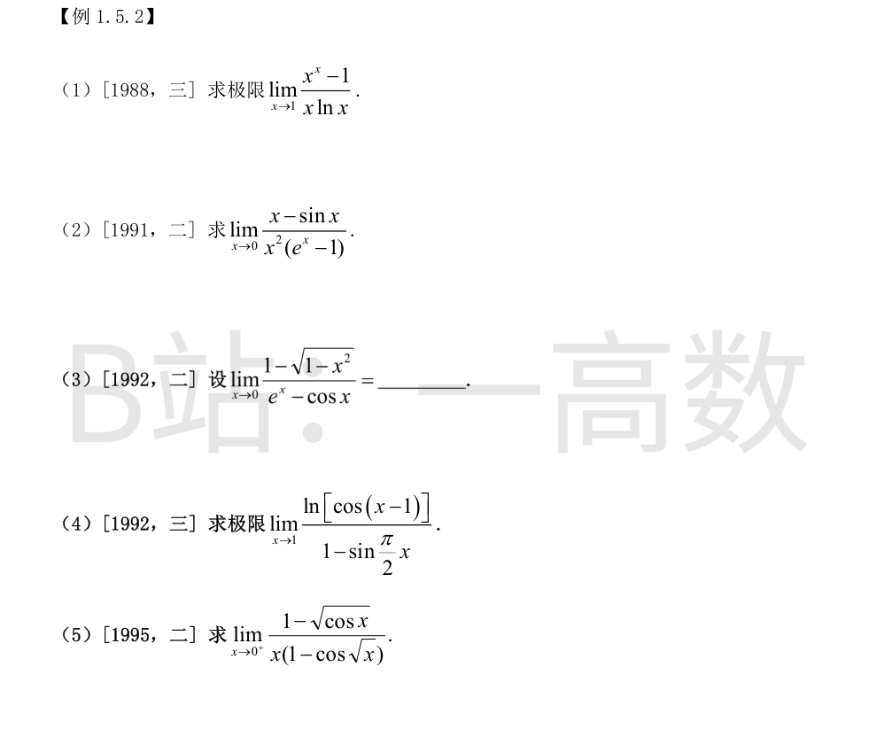
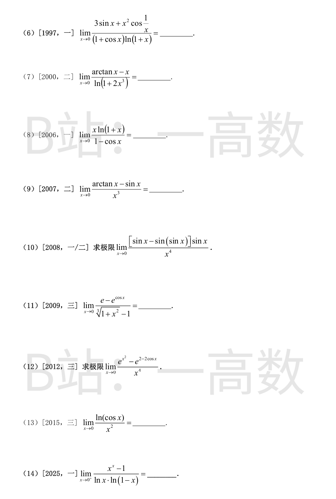
$x\to1$ 时 $x\ln x\to0$，故
$$x^x-1=e^{x\ln x}-1\sim x\ln x,$$
于是原式 $=\lim\limits_{x\to1}\dfrac{x\ln x}{x\ln x}=1$。
等价无穷小：$x-\sin x\sim\dfrac{x^3}{6}$，$e^x-1\sim x$，故分母 $\sim x^3$。
$$\text{原式}=\lim_{x\to0}\frac{x^3/6}{x^3}=\frac16.$$
$1-\sqrt{1-x^2}\sim\dfrac{x^2}{2}$；
$$e^x-\cos x=\left(1+x+\frac{x^2}2+\cdots\right)-\left(1-\frac{x^2}2+\cdots\right)=x+x^2+o(x^2)\sim x.$$
故原式 $=\lim\limits_{x\to0}\dfrac{x^2/2}{x}=0$。
令 $t=x-1\to0$。$\ln\cos t\sim-\dfrac{t^2}{2}$；
$$\sin\frac{\pi x}{2}=\sin\left(\frac\pi2+\frac{\pi t}2\right)=\cos\frac{\pi t}2=1-\frac{\pi^2t^2}{8}+o(t^2),$$
故分母 $1-\sin\dfrac{\pi x}{2}\sim\dfrac{\pi^2t^2}{8}$。于是
$$\text{原式}=\lim_{t\to0}\frac{-t^2/2}{\pi^2t^2/8}=-\frac{4}{\pi^2}.$$
$1-\sqrt{\cos x}\sim\dfrac{1-\cos x}{2}\sim\dfrac{x^2}{4}$；$1-\cos\sqrt x\sim\dfrac x2$，故分母 $\sim\dfrac{x^2}{2}$。
$$\text{原式}=\lim_{x\to0^+}\frac{x^2/4}{x^2/2}=\frac12.$$
$3\sin x\sim3x$，且 $\left|x^2\cos\frac1x\right|\le x^2=o(x)$，故分子 $\sim3x$；
分母 $(1+\cos x)\ln(1+x)\sim2x$。原式 $=\lim\dfrac{3x}{2x}=\dfrac32$。
$\arctan x-x\sim-\dfrac{x^3}{3}$，$\ln(1+2x^3)\sim2x^3$，故原式 $=\dfrac{-x^3/3}{2x^3}=-\dfrac16$。
$x\ln(1+x)\sim x^2$，$1-\cos x\sim\dfrac{x^2}{2}$，故原式 $=\dfrac{x^2}{x^2/2}=2$。
$$\arctan x-\sin x=(\arctan x-x)+(x-\sin x)\sim-\frac{x^3}{3}+\frac{x^3}{6}=-\frac{x^3}{6},$$
除以 $x^3$ 得 $-\dfrac16$。
记 $u=\sin x\to0$，则 $\sin u=u-\dfrac{u^3}6+o(u^3)$，故
$$\sin x-\sin(\sin x)=u-\sin u\sim\frac{u^3}{6}=\frac{\sin^3x}{6}.$$
于是
$$\lim_{x\to0}\frac{[\sin x-\sin(\sin x)]\sin x}{x^4}
=\lim_{x\to0}\frac{\sin^4x/6}{x^4}=\frac16.$$
$$e-e^{\cos x}=e\left(1-e^{\cos x-1}\right)\sim e(1-\cos x)\sim\frac{e\,x^2}{2};$$
$\sqrt[3]{1+x^2}-1\sim\dfrac{x^2}{3}$。原式 $=\dfrac{e/2}{1/3}=\dfrac{3e}{2}$。
$$2-2\cos x=x^2-\frac{x^4}{12}+O(x^6)\ \Rightarrow\ 2-2\cos x-x^2=-\frac{x^4}{12}+O(x^6).$$
于是
$$e^{x^2}-e^{2-2\cos x}=e^{x^2}\left(1-e^{2-2\cos x-x^2}\right)\sim 1\cdot\left[-\left(2-2\cos x-x^2\right)\right]=\frac{x^4}{12},$$
除以 $x^4$ 得 $\dfrac{1}{12}$。
$\ln\cos x=\ln(1-\tfrac{x^2}2+O(x^4))=-\tfrac{x^2}{2}+O(x^4)$，故极限 $=-\dfrac12$。
$x\to0^+$ 时 $x\ln x\to0$，故
$$x^x-1=e^{x\ln x}-1\sim x\ln x;\qquad \ln(1-x)\sim-x,$$
分母 $\ln x\cdot\ln(1-x)\sim-x\ln x$。原式 $=\dfrac{x\ln x}{-x\ln x}=-1$。
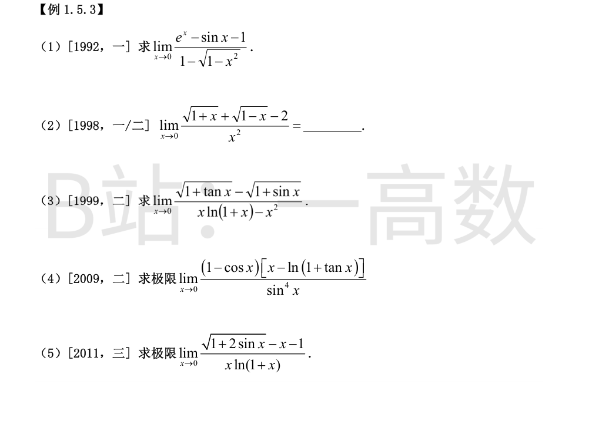
$$e^x-\sin x-1=\left(1+x+\frac{x^2}2+\frac{x^3}6+\cdots\right)-\left(x-\frac{x^3}6+\cdots\right)-1=\frac{x^2}{2}+\frac{x^3}{3}+o(x^3)\sim\frac{x^2}{2};$$
又 $1-\sqrt{1-x^2}\sim\dfrac{x^2}{2}$。原式 $=1$。
$$\sqrt{1+x}=1+\frac x2-\frac{x^2}{8}+o(x^2),\qquad \sqrt{1-x}=1-\frac x2-\frac{x^2}{8}+o(x^2),$$
分子 $=-\dfrac{x^2}{4}+o(x^2)$，故极限 $=-\dfrac14$。
分子有理化：
$$\sqrt{1+\tan x}-\sqrt{1+\sin x}=\frac{\tan x-\sin x}{\sqrt{1+\tan x}+\sqrt{1+\sin x}}\sim\frac{x^3/2}{2}=\frac{x^3}{4}.$$
分母：$x\ln(1+x)-x^2=x\left(x-\dfrac{x^2}2+\cdots\right)-x^2=-\dfrac{x^3}{2}+o(x^3)$。
$$\text{原式}=\frac{x^3/4}{-x^3/2}=-\frac12.$$
$1-\cos x\sim\dfrac{x^2}{2}$。又
$$\ln(1+\tan x)=\tan x-\frac{\tan^2x}{2}+o(x^3)=x-\frac{x^2}{2}+o(x^3),$$
故 $x-\ln(1+\tan x)\sim\dfrac{x^2}{2}$。于是分子 $\sim\dfrac{x^2}{2}\cdot\dfrac{x^2}{2}=\dfrac{x^4}{4}$，$\sin^4x\sim x^4$，
$$\text{原式}=\frac14.$$
$$\sqrt{1+2\sin x}=1+\sin x-\frac{\sin^2x}{2}+o(x^2)=1+x-\frac{x^2}{2}+o(x^2),$$
故分子 $=-\dfrac{x^2}{2}+o(x^2)$；分母 $x\ln(1+x)\sim x^2$。原式 $=-\dfrac12$。
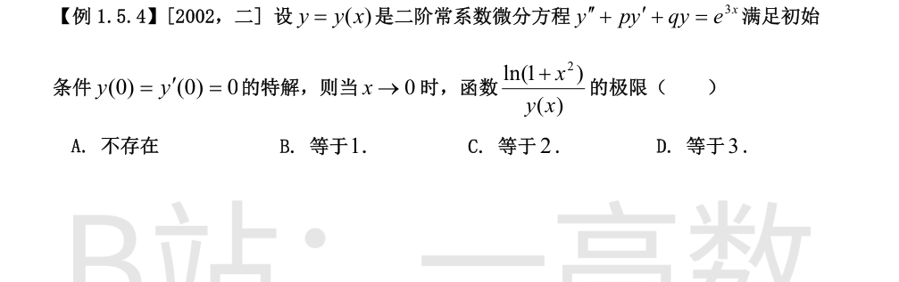
在方程中令 $x=0$：$y''(0)+py'(0)+qy(0)=e^{0}=1$，即 $y''(0)=1$。由泰勒公式
$$y(x)=y(0)+y'(0)x+\frac{y''(0)}{2}x^2+o(x^2)=\frac{x^2}{2}+o(x^2).$$
又 $\ln(1+x^2)\sim x^2$，故
$$\lim_{x\to0}\frac{\ln(1+x^2)}{y(x)}=\lim_{x\to0}\frac{x^2}{x^2/2}=2.$$
选 C。
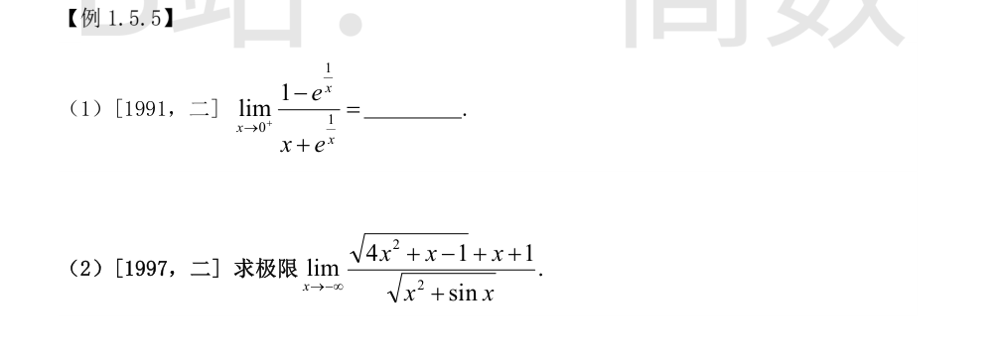
令 $t=\dfrac1x\to+\infty$：
$$\lim_{t\to+\infty}\frac{1-e^{t}}{\frac1t+e^{t}}
=\lim_{t\to+\infty}\frac{e^{-t}-1}{\dfrac{e^{-t}}{t}+1}=\frac{0-1}{0+1}=-1.$$
$x\to-\infty$ 时 $\sqrt{4x^2+x-1}=-2x\sqrt{1+\dfrac1{4x}-\dfrac1{4x^2}}=-2x-\dfrac14+o(1)$，故分子
$$\sqrt{4x^2+x-1}+x+1=-x+\frac34+o(1);$$
分母 $\sqrt{x^2+\sin x}=-x\sqrt{1+\dfrac{\sin x}{x^2}}=-x+o(x)$。于是
$$\text{原式}=\lim_{x\to-\infty}\frac{-x+\frac34+o(1)}{-x+o(x)}=1.$$
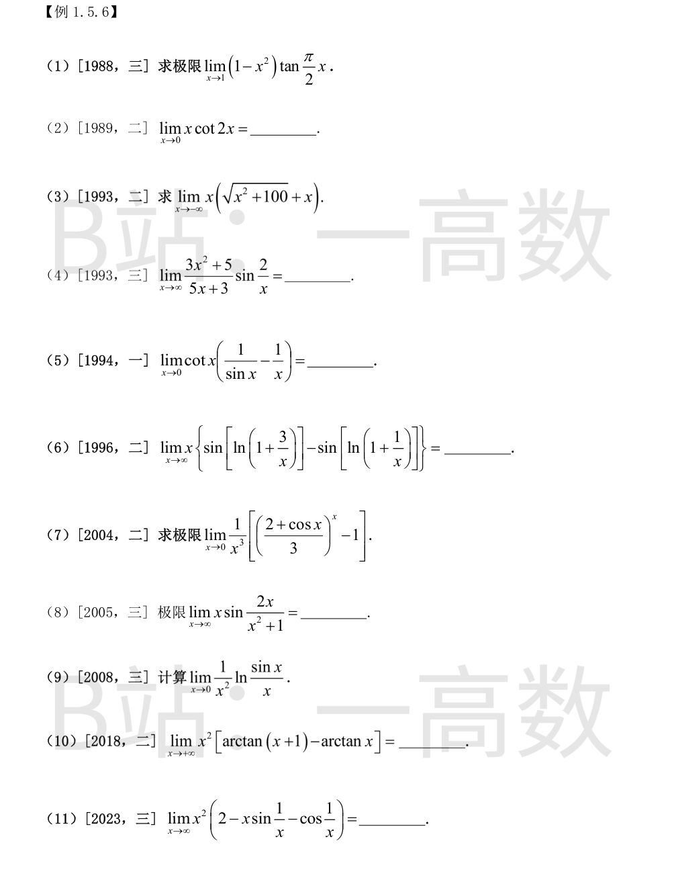
令 $t=x-1\to0$：$1-x^2=-(2t+t^2)$，$\tan\dfrac{\pi x}{2}=\tan\left(\dfrac\pi2+\dfrac{\pi t}{2}\right)=-\cot\dfrac{\pi t}{2}\sim-\dfrac{2}{\pi t}$。故
$$\text{原式}=\lim_{t\to0}(2t+t^2)\cdot\frac{2}{\pi t}=\frac{4}{\pi}.$$
$$\lim_{x\to0}x\cot2x=\lim_{x\to0}\frac{x\cos2x}{\sin2x}=\lim_{x\to0}\frac{x}{2x}=\frac12.$$
令 $x=-t$，$t\to+\infty$：
$$-t\left(\sqrt{t^2+100}-t\right)=-t\cdot\frac{100}{\sqrt{t^2+100}+t}\longrightarrow-\frac{100}{2}=-50.$$
$x\to\infty$ 时 $\dfrac{3x^2+5}{5x+3}\sim\dfrac{3x^2}{5x}=\dfrac{3x}{5}$，$\sin\dfrac2x\sim\dfrac2x$。
$$\text{原式}=\lim_{x\to\infty}\frac{3x}{5}\cdot\frac{2}{x}=\frac65.$$
$$\cot x\left(\frac1{\sin x}-\frac1x\right)=\frac{\cos x\,(x-\sin x)}{x\sin^2x},$$
$x-\sin x\sim\dfrac{x^3}{6}$，$\sin^2x\sim x^2$，故原式 $=\lim\dfrac{x^3/6}{x\cdot x^2}=\dfrac16$。
$x\to\infty$ 时 $\ln\left(1+\dfrac kx\right)\to0$，故
$$\sin\left[\ln\left(1+\frac kx\right)\right]\sim\ln\left(1+\frac kx\right)\sim\frac kx.$$
于是花括号内 $\sim\dfrac3x-\dfrac1x=\dfrac2x$，乘 $x$ 得极限 $2$。
$$\ln\frac{2+\cos x}{3}=\ln\left(1+\frac{\cos x-1}{3}\right)\sim\frac{\cos x-1}{3}\sim-\frac{x^2}{6}.$$
故
$$\left(\frac{2+\cos x}{3}\right)^x-1=e^{x\ln\frac{2+\cos x}{3}}-1\sim x\ln\frac{2+\cos x}{3}\sim-\frac{x^3}{6},$$
除以 $x^3$ 得 $-\dfrac16$。
$\dfrac{2x}{x^2+1}\to0$，故 $x\sin\dfrac{2x}{x^2+1}\sim x\cdot\dfrac{2x}{x^2+1}\to2$。
$$\frac{\sin x}{x}=1-\frac{x^2}{6}+o(x^2)\ \Rightarrow\ \ln\frac{\sin x}{x}=-\frac{x^2}{6}+o(x^2),$$
除以 $x^2$ 得 $-\dfrac16$。
由拉格朗日中值定理，存在 $\xi\in(x,x+1)$ 使
$$\arctan(x+1)-\arctan x=\frac{1}{1+\xi^2}.$$
$x\to+\infty$ 时 $\xi\sim x$，故原式 $=\lim\dfrac{x^2}{1+\xi^2}=1$。
令 $t=\dfrac1x\to0$，原式 $=\lim\limits_{t\to0}\dfrac{2t^2-t\sin t-t^2\cos t}{t^2}$，分子分母同除 $t^2$ 后需更高阶：
$$\frac{\sin t}{t}=1-\frac{t^2}{6}+\frac{t^4}{120}-\cdots,\qquad \cos t=1-\frac{t^2}{2}+\frac{t^4}{24}-\cdots,$$
$$2-\frac{\sin t}{t}-\cos t=\left(\frac16+\frac12\right)t^2+\left(-\frac1{120}-\frac1{24}\right)t^4+\cdots=\frac{2}{3}t^2+O(t^4).$$
故原式 $=\dfrac{2}{3}$。
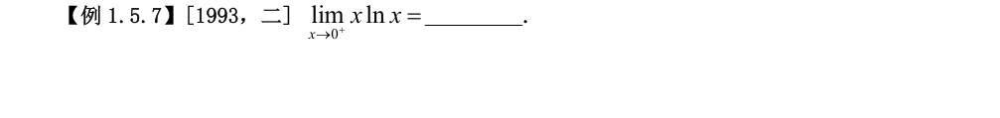
$0\cdot\infty$ 型，化为商：
$$\lim_{x\to0^+}x\ln x=\lim_{x\to0^+}\frac{\ln x}{1/x}\overset{\text{L}}{=}\lim_{x\to0^+}\frac{1/x}{-1/x^2}=\lim_{x\to0^+}(-x)=0.$$
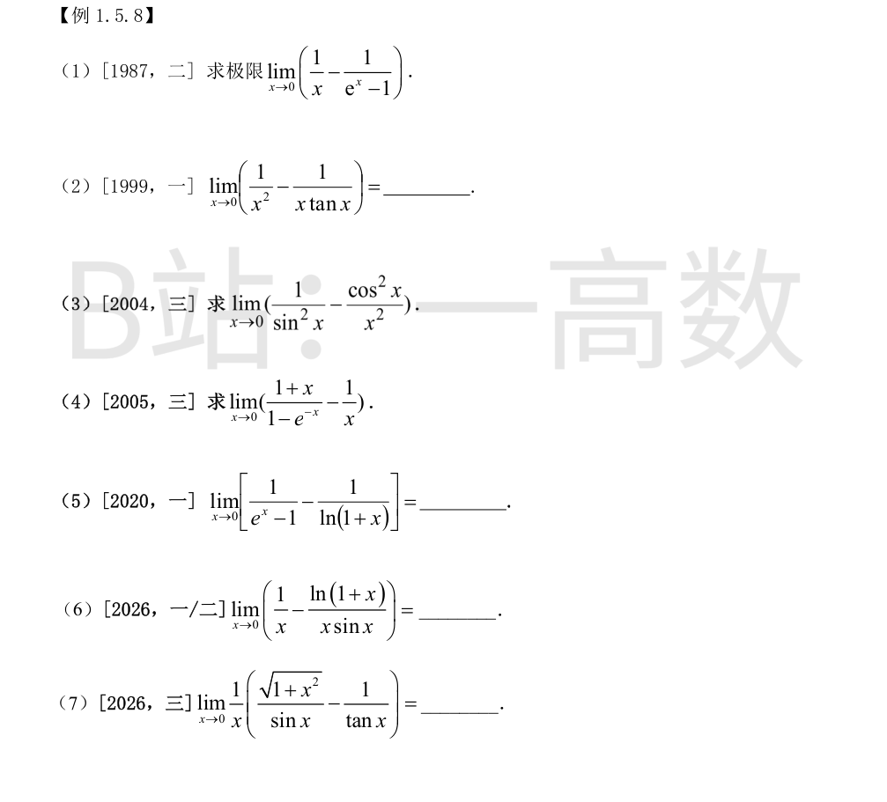
通分：$\dfrac{e^x-1-x}{x(e^x-1)}$。分子 $e^x-1-x\sim\dfrac{x^2}{2}$，分母 $\sim x^2$，故极限 $=\dfrac12$。
通分：$\dfrac{\tan x-x}{x^2\tan x}$。$\tan x-x\sim\dfrac{x^3}{3}$，分母 $\sim x^3$，故极限 $=\dfrac13$。
通分：$\dfrac{x^2-\sin^2x\cos^2x}{x^2\sin^2x}$。分子 $=x^2-\dfrac14\sin^22x$，而
$$\sin2x=2x-\frac43x^3+o(x^3)\ \Rightarrow\ \sin^22x=4x^2-\frac{16}{3}x^4+o(x^4),$$
故分子 $=\dfrac43x^4+o(x^4)$；分母 $x^2\sin^2x\sim x^4$。极限 $=\dfrac43$。
通分：$\dfrac{x(1+x)-(1-e^{-x})}{x(1-e^{-x})}$。由
$$1-e^{-x}=x-\frac{x^2}{2}+\frac{x^3}{6}+o(x^3),$$
分子 $=x+x^2-x+\dfrac{x^2}{2}+o(x^2)=\dfrac32x^2+o(x^2)$（一次项相消）；分母 $\sim x^2$。极限 $=\dfrac32$。
【仲裁修正】独立校验发现分歧，经仲裁重解，以本答案为准：分子 x+x²-1+eˣ=2x+3x²/2+…，分母 x(1-eˣ)~-x²，比值 ~ -2/x，左右极限为 ±∞；3/2 是通分展开算错（数值验证 x=0.01 时≈-200.5
通分：$\dfrac{\ln(1+x)-(e^x-1)}{(e^x-1)\ln(1+x)}$。分子
$$\left(x-\frac{x^2}{2}+\frac{x^3}{3}+\cdots\right)-\left(x+\frac{x^2}{2}+\frac{x^3}{6}+\cdots\right)=-x^2+o(x^2)\sim-x^2,$$
分母 $\sim x^2$。极限 $=-1$。
通分：$\dfrac{\sin x-\ln(1+x)}{x\sin x}$。分子
$$\left(x-\frac{x^3}{6}+\cdots\right)-\left(x-\frac{x^2}{2}+\frac{x^3}{3}-\cdots\right)=\frac{x^2}{2}+o(x^2)\sim\frac{x^2}{2},$$
分母 $\sim x^2$。极限 $=\dfrac12$。
$$\frac1x\left(\frac{\sqrt{1+x^2}}{\sin x}-\frac{\cos x}{\sin x}\right)=\frac1x\cdot\frac{\sqrt{1+x^2}-\cos x}{\sin x}.$$
$\sqrt{1+x^2}=1+\dfrac{x^2}{2}+o(x^2)$，$\cos x=1-\dfrac{x^2}{2}+o(x^2)$，故分子 $\sqrt{1+x^2}-\cos x\sim x^2$；$x\sin x\sim x^2$。极限 $=1$。
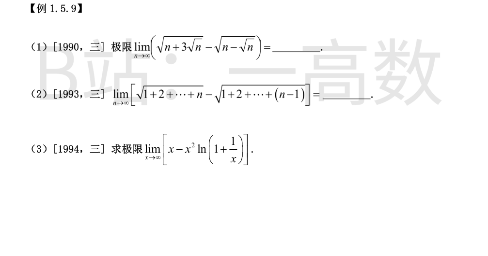
平方差：$(n+3\sqrt[3]n)-(n-\sqrt n)=3n^{1/3}+n^{1/2}$；分母（共轭和）$\sim2\sqrt n$。故
$$\text{原式}=\lim_{n\to\infty}\frac{3n^{1/3}+n^{1/2}}{2\sqrt n}=\frac12.$$
【仲裁修正】独立校验发现分歧，经仲裁重解，以本答案为准：有理化后 = 4√n/(√(n+3√n)+√(n-√n)) → 4√n/(2√n)=2；1/2 与 -1/2 均为有理化计算错误
$$=\sqrt{\frac{n(n+1)}{2}}-\sqrt{\frac{n(n-1)}{2}}=\sqrt{\frac n2}\left(\sqrt{n+1}-\sqrt{n-1}\right)
=\sqrt{\frac n2}\cdot\frac{2}{\sqrt{n+1}+\sqrt{n-1}},$$
$\sqrt{n+1}+\sqrt{n-1}\sim2\sqrt n$，故极限 $=\sqrt{\dfrac n2}\cdot\dfrac{2}{2\sqrt n}=\dfrac{1}{\sqrt2}=\dfrac{\sqrt2}{2}$。
$$\ln\left(1+\frac1x\right)=\frac1x-\frac{1}{2x^2}+\frac{1}{3x^3}+o(x^{-3}),$$
$$x^2\ln\left(1+\frac1x\right)=x-\frac12+\frac{1}{3x}+o(1),$$
故 $x-x^2\ln\left(1+\dfrac1x\right)=\dfrac12+o(1)\to\dfrac12$。
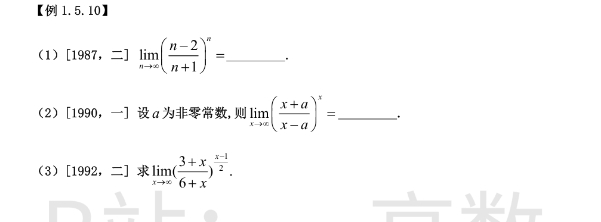
$$\left(\frac{n-2}{n+1}\right)^n=\left(1-\frac{3}{n+1}\right)^n,\quad
n\ln\left(1-\frac{3}{n+1}\right)\sim n\cdot\left(-\frac{3}{n+1}\right)\to-3,$$
故极限 $=e^{-3}$。
$$\left(\frac{x+a}{x-a}\right)^x=\left(1+\frac{2a}{x-a}\right)^x,\quad
x\ln\left(1+\frac{2a}{x-a}\right)\sim\frac{2ax}{x-a}\to2a,$$
故极限 $=e^{2a}$。
取对数：
$$\frac{x-1}{2}\ln\frac{3+x}{6+x}=\frac{x-1}{2}\ln\left(1-\frac{3}{6+x}\right)\sim\frac{x-1}{2}\cdot\left(-\frac{3}{6+x}\right)\to-\frac32,$$
故极限 $=e^{-\frac32}$。
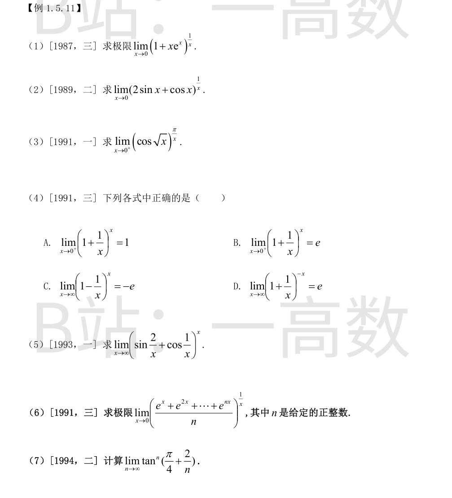
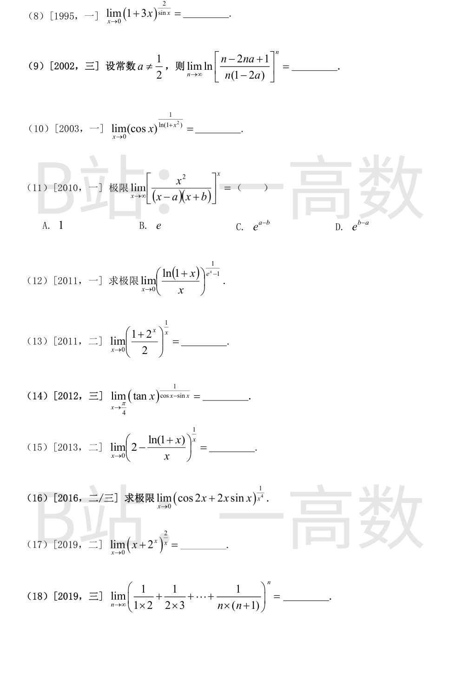
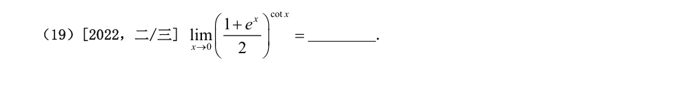
取对数：$\dfrac{\ln(1+xe^x)}{x}\sim\dfrac{xe^x}{x}\to1$，故极限 $=e$。
$2\sin x+\cos x=1+2x+o(x)$。取对数：
$$\frac{\ln(2\sin x+\cos x)}{x}=\frac{\ln(1+2x+o(x))}{x}\to2,$$
故极限 $=e^{2}$。
$1-\cos\sqrt x\sim\dfrac x2$，故 $\ln\cos\sqrt x=\ln(1-(1-\cos\sqrt x))\sim-\dfrac x2$。取对数：
$$\frac{\pi}{x}\ln\cos\sqrt x\to\frac{\pi}{x}\cdot\left(-\frac x2\right)=-\frac{\pi}{2},$$
故极限 $=e^{-\frac\pi2}$。
A：$x\to0^+$ 时 $(1+\dfrac1x)^x=e^{x\ln(1+1/x)}$，指数 $x\ln\dfrac1x\to0$，极限 $=e^0=1$，正确。
B：同上极限为 $1$ 而非 $e$，错。
C：$\lim\limits_{x\to\infty}(1-\dfrac1x)^x=e^{-1}\ne-e$，错。
D：$\lim\limits_{x\to\infty}(1+\dfrac1x)^{-x}=e^{-1}\ne e$，错。
故选 A。
令 $t=\dfrac1x\to0$。$\sin2t+\cos t=1+2t+o(t)$。取对数：
$$\frac{\ln(\sin2t+\cos t)}{t}=\frac{\ln(1+2t+o(t))}{t}\to2,$$
故极限 $=e^{2}$。
$e^{kx}=1+kx+o(x)$，故分子和
$$e^x+e^{2x}+\cdots+e^{nx}=n+x(1+2+\cdots+n)+o(x)=n\left[1+\frac{n+1}{2}x+o(x)\right].$$
取对数：
$$\frac1x\ln\left[1+\frac{n+1}{2}x+o(x)\right]\to\frac{n+1}{2},$$
故极限 $=e^{\frac{n+1}{2}}$。
记 $u=\dfrac2n\to0$：
$$\tan\left(\frac\pi4+u\right)=\frac{1+\tan u}{1-\tan u}=\frac{1+u+o(u)}{1-u+o(u)}=1+2u+O(u^2)=1+\frac4n+O\left(\frac1{n^2}\right).$$
取对数：$n\ln\left(1+\dfrac4n+O(n^{-2})\right)\to4$，故极限 $=e^4$。
取对数：$\dfrac{2\ln(1+3x)}{\sin x}\sim\dfrac{6x}{x}=6$，故极限 $=e^{6}$。
$$\frac{n-2na+1}{n(1-2a)}=\frac{n(1-2a)+1}{n(1-2a)}=1+\frac{1}{n(1-2a)},$$
$$n\ln\left(1+\frac{1}{n(1-2a)}\right)\sim n\cdot\frac{1}{n(1-2a)}\to\frac{1}{1-2a},$$
故所求 $=\ln e^{\frac{1}{1-2a}}$，即极限为 $e^{\frac{1}{1-2a}}$。
【仲裁修正】独立校验发现分歧，经仲裁重解，以本答案为准：原式 = n·ln(1+1/(n(1-2a))) → 1/(1-2a)，ln 在指数 n 之外，不应再取 e（a=0 时数值验证极限=1 而 e¹≈2.72）；A 的答案正确
取对数：$\dfrac{\ln\cos x}{\ln(1+x^2)}\sim\dfrac{-x^2/2}{x^2}=-\dfrac12$，故极限 $=e^{-\frac12}$。
$$\frac{x^2}{(x-a)(x+b)}=\frac{1}{(1-\frac ax)(1+\frac bx)}=1+\frac{a-b}{x}+O\left(\frac1{x^2}\right).$$
取对数：$x\ln\left(1+\dfrac{a-b}{x}+O(x^{-2})\right)\to a-b$，故极限 $=e^{a-b}$，选 C。
$\dfrac{\ln(1+x)}{x}=1-\dfrac x2+O(x^2)$。取对数：
$$\frac{\ln\left(\frac{\ln(1+x)}{x}\right)}{e^x-1}\sim\frac{-x/2}{x}=-\frac12,$$
故极限 $=e^{-\frac12}$。
$\dfrac{1+2^x}{2}=1+\dfrac{2^x-1}{2}$，且 $2^x-1\sim x\ln2$。取对数：
$$\frac1x\cdot\frac{2^x-1}{2}\to\frac{\ln2}{2},$$
故极限 $=e^{\frac{\ln2}{2}}=\sqrt2$。
令 $t=x-\dfrac\pi4\to0$。$\tan x=1+2t+o(t)$，故 $\ln\tan x\sim2t$；
$$\cos x-\sin x=\sqrt2\cos\left(x+\frac\pi4\right)=\sqrt2\cos\left(\frac\pi2+t\right)=-\sqrt2\sin t\sim-\sqrt2\,t.$$
取对数：$\dfrac{\ln\tan x}{\cos x-\sin x}\sim\dfrac{2t}{-\sqrt2t}=-\sqrt2$，故极限 $=e^{-\sqrt2}$。
$\dfrac{\ln(1+x)}{x}=1-\dfrac x2+O(x^2)$，故底数 $=1+\dfrac x2+O(x^2)$。取对数：
$$\frac1x\ln\left(1+\frac x2+O(x^2)\right)\to\frac12,$$
故极限 $=e^{\frac12}=\sqrt e$。
$$\cos2x=1-2x^2+\frac23x^4+o(x^4),\qquad 2x\sin x=2x^2-\frac{x^4}{3}+o(x^4),$$
底数 $=1+\dfrac{x^4}{3}+o(x^4)$。取对数：$\dfrac1{x^4}\ln\left(1+\dfrac{x^4}{3}+o(x^4)\right)\to\dfrac13$，故极限 $=e^{\frac13}$。
$2^x=1+x\ln2+o(x)$，故底数 $=1+(1+\ln2)x+o(x)$。取对数：
$$\frac2x\ln\left(1+(1+\ln2)x+o(x)\right)\to2(1+\ln2),$$
故极限 $=e^{2(1+\ln2)}=e^2\cdot e^{\ln4}=4e^2$。
【仲裁修正】独立校验发现分歧，经仲裁重解，以本答案为准：ln(x+2ˣ)=ln(1+x(1+ln2)+O(x²))~x(1+ln2)，乘 2/x 得 2(1+ln2)，极限=e^{2+2ln2}=4e²；B 的 2e 少乘一层（数值验证 x=0.001 时≈29.5≈4e²，而 2e≈5.44）
由裂项 $\dfrac{1}{k(k+1)}=\dfrac1k-\dfrac1{k+1}$，和 $=1-\dfrac{1}{n+1}=\dfrac{n}{n+1}$。
$$\left(\frac{n}{n+1}\right)^n=\left(1-\frac{1}{n+1}\right)^n,\quad n\ln\left(1-\frac1{n+1}\right)\sim-\frac{n}{n+1}\to-1,$$
故极限 $=e^{-1}$。
取对数：$\cot x\cdot\ln\dfrac{1+e^x}{2}$，而
$$\ln\frac{1+e^x}{2}=\ln\left(1+\frac{e^x-1}{2}\right)\sim\frac{e^x-1}{2}\sim\frac x2,\qquad \cot x\sim\frac1x,$$
乘积 $\to\dfrac12$，故极限 $=e^{\frac12}=\sqrt e$。
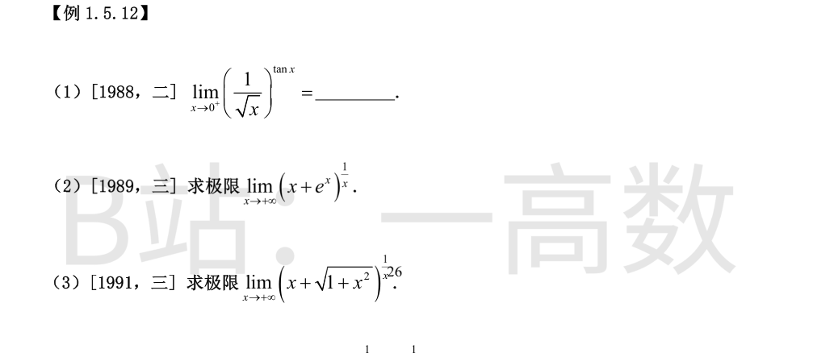
取对数：$\tan x\ln\dfrac{1}{\sqrt x}=-\dfrac12\tan x\ln x\to0$（$\tan x\sim x$ 为无穷小，$x\ln x\to0$）。故极限 $=e^0=1$。
取对数：$\dfrac{\ln(x+e^x)}{x}$。而 $x+e^x=e^x(1+xe^{-x})$，故
$$\ln(x+e^x)=x+\ln(1+xe^{-x})=x+o(1),$$
除以 $x\to1$，极限 $=e$。
取对数：$\dfrac{\ln\left(x+\sqrt{1+x^2}\right)}{x}$。$x\to+\infty$ 时 $x+\sqrt{1+x^2}\sim2x$，故
$$\lim_{x\to+\infty}\frac{\ln(2x)}{x}=0,$$
（对数增长远慢于幂），极限 $=e^0=1$。